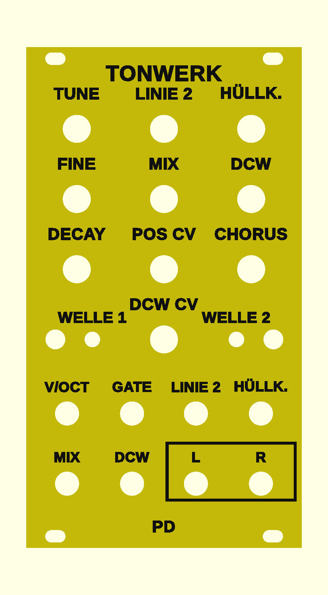

Tonwerk PD as a Eurorack module
A third firmware for the same boards as the wavetable module: the sound engine of the plugin Tonwerk PD, phase distortion. A cosine wave is read through a bent phase. The more it is bent (DCW), the more the soft sine turns into a saw, a square, a pulse or a resonance, and an envelope on the bend opens the sound like a filter.
Overview

- The same engine as the plugin, rewritten in float: eight waves, each line's bend with its DCW envelope, the level with its own. A test on the computer compares every wave and every way of combining the lines with the plugin.
- Two lines: each with its own wave, optionally a second one that alternates cycle by cycle. Line 2 sits an interval above and slightly detuned; ring or noise connect the two.
- Stereo: the two lines sit apart left and right, followed by the plugin's chorus. The outputs are L and R.
- One voice (the plugin plays polyphonically): V/OCT, GATE and CV for the interval, the envelope, the mix and the bend.
- A front panel of its own; the preview shows it yellow with black lettering like the Physical panel, the colours are up to you.
This firmware is tested on the computer; it has never run on an ESP32. On the computer it needs less processing time than the wavetable firmware.
Operation
The front is the same as on the wavetable module, only the lettering differs. The WARP button is called WELLE 1 (wave 1) here, the FILTER button WELLE 2. Layers, pick-up, holding versus tapping, saving and calibration work exactly as described there.
All knobs
| Knob | Normal | WELLE 1 held | WELLE 2 held |
|---|---|---|---|
| TUNE | Tuning ±2 octaves in semitones | Attack of the DCW envelope, 1 ms to 2 s | Detune of line 2, ±50 cents (default +7 cents) |
| FINE | Fine tuning ±50 cents | Sustain of the DCW envelope | Lines: 1, 2, 1 + 1′ (line 1 once more, with line 2's detune), 1 + 2′ (both, default) |
| LINIE 2 | Interval of line 2, from unison to two octaves in semitones; one octave in the middle | Second wave of line 1: off or one of the eight. The two waves then alternate cycle by cycle. | Second wave of line 2 |
| HÜLLK. | How far the DCW envelope bends both lines | Key tracking: above C3 high notes bend less, so they stay soft | Modulation: off, ring (line 2 times line 1), noise (line 2 read at a wandering phase) |
| MIX | Line 1 against line 2, both equally loud in the middle | Attack of the level, 1 ms to 2 s | Stereo width of the two lines (default 50 %) |
| DCW | Bend without the envelope: left a pure cosine, right fully bent | Sustain of the level | Chorus rate, 0.1 to 5 Hz (default 0.6 Hz) |
| CHORUS | Chorus mix, off on the left | Release of the level, 5 ms to 5 s | Chorus depth |
| DECAY | Decay of the DCW envelope, 5 ms to 5 s | Decay of the level, 5 ms to 5 s | Release of the DCW envelope, 5 ms to 5 s |
| POS CV | Attenuator for the HÜLLK. jack: middle 0, right full, left inverted | – | – |
| DCW CV | Attenuator for the DCW jack: middle 0, right full, left inverted | – | – |
Waves (tap WELLE 1 and WELLE 2)
WELLE 1 picks the wave of line 1, LED 1 shows it; WELLE 2 and LED 2 do the same for line 2. Saw and square by default.
| LED | Wave | Fully bent |
|---|---|---|
| yellow | Saw | Sawtooth: all harmonics. |
| cyan | Square | Square: odd harmonics only, hollow. |
| magenta | Pulse | Narrow pulse, thin and nasal. |
| green | Double sine | Two arches per cycle, the octave comes forward. |
| orange | Saw-pulse | Half saw, half pulse. |
| red | Resonance saw | A resonance up to 16 times the note, dying away under a saw: sounds like a filter with high resonance. |
| blue | Resonance triangle | The same resonance under a triangle, softer. |
| violet | Resonance trapezoid | Under a trapezoid, the fullest. |
Unbent, every wave but the resonances is a pure cosine. Both LEDs light up with the level envelope and dim with it, never fully off.
Striking a note
- With a gate
- A rising edge at GATE restarts both envelopes; when the gate falls, their release begins.
- With V/OCT only
- While the gate is on, or no cable is in GATE, every jump at V/OCT of at least half a semitone also strikes, as with the Physical firmware. A sequencer without a gate thus plays every new note; a glide only moves the pitch.
- Drone
- Without a gate cable the note holds after the first strike. DCW, MIX and an LFO at the DCW jack then shape the sound.
Jacks
| Jack | Range | What it does |
|---|---|---|
| V/OCT | −1 to +7 V | Pitch, 1 V per octave, 0 V = C2. A jump strikes (see above). |
| GATE | from about 1.4 V | Rising: strike. Falling: release. Permanently on without a cable. |
| LINIE 2 | ±5 V | 1 V per octave on line 2's interval: a second sequencer plays the second line. |
| HÜLLK. | ±5 V | Shifts the depth of the DCW envelope, through the POS CV attenuator. |
| MIX | ±5 V | Added to the mix, 5 V from the middle to the end stop. |
| DCW | ±5 V | Bends both lines, through the DCW CV attenuator, 5 V over the whole travel. With an LFO this becomes a filter sweep. |
| L (output) | ±5 V | Left channel. |
| R (output) | ±5 V | Right channel. For mono set the width to 0 and the chorus off, then both are the same. |
The outputs are at module level. They are far too loud for headphones; always go through a mixer or an output module.
First patches
- Bass
- Saw on line 1, MIX fully left, DCW left, HÜLLK. half, DECAY short. Gate and V/OCT from the sequencer: every note opens and closes like a filter.
- Resonance sweep
- Resonance saw on line 1, a slow LFO at the DCW jack, DCW CV halfway right. The resonance wanders through the harmonics.
- Wide pad
- Saw and square (the default), LINIE 2 on the octave, MIX in the middle, CHORUS half, long attacks in the WELLE 1 layer. L and R separately into the mixer.
- Bell
- Hold WELLE 2 and set HÜLLK. to ring, LINIE 2 to an odd interval (a sixth and a few cents), a long level decay.
Front panel
The same three variants as for the wavetable module (build guide, step 2), with this firmware's lettering: raised lettering, engraved lettering and inlaid lettering (3MF, two colours). For the raised print start with the panel's colour and change to the lettering's at 2.5 mm.
Firmware
The firmware is one file, tonwerk-pd.bin, written to address 0x0 as in the build guide, step 8. It needs no tables; the first start takes no longer than any other. Going back works the same way, with tonwerk-modul.bin or tonwerk-physical.bin.
Flashing erases the saved settings and the calibration. So calibrate again after flashing.
As of 31 October 2026. Source code and front panel are on GitHub under the same PolyForm Noncommercial License as the plugins: building one for yourself yes, selling only with permission.